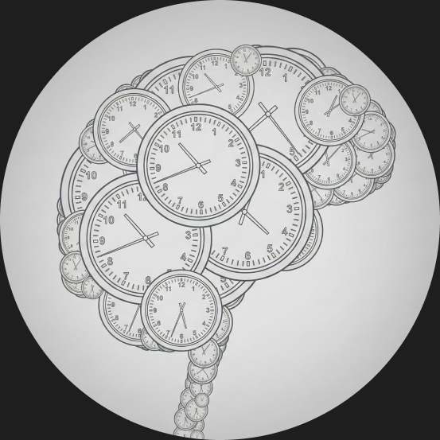
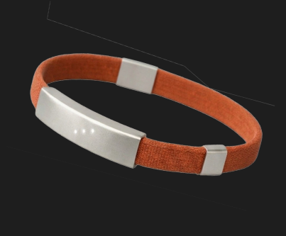
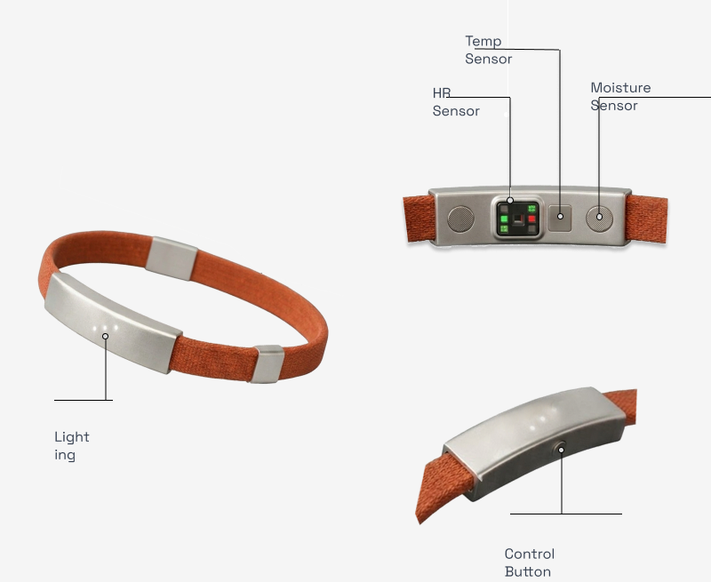

Distraction quietly eats the day
1hour
lost to distraction daily per US knowledge worker, the baseline cost this project set out to address.
Case study · Wearable + App
Redefining your sense of time.


Overview
FLUX makes chronoception (the human sense of time) legible for the first time. By pairing a minimalist wristband with an intelligent app, we translate physiological data into a real-time cognitive state signal, bridging the gap between perceived time and objective reality.
From first research to an interactive app prototype and a wristband hardware concept.
Problem statement
Young professionals don't lose their days to laziness; they lose them to invisible mental drift and hours spent in the wrong cognitive state, with no signal that anything is wrong.
Research
Three data points framed the problem and who it hits hardest.
lost to distraction daily per US knowledge worker, the baseline cost this project set out to address.
to regain focus after a single interruption, according to attention-research benchmarks.
of work time lost to distraction, nearly double for adults with ADHD.
Who it's for
Young professionals
High-functioning, digitally native knowledge workers who feel their focus slipping but have no way to see where the time actually went.
The neurodivergent core
Adults with ADHD lose 51% of their work time to distraction, nearly double the 25% lost by neurotypical peers. That is the sharpest edge of the problem FLUX was built to address.
Solution
Track nervous system patterns to identify Flow, Drift, or Stress states in real time.
Gentle tactile and LED nudges when your state misaligns with your intention.
Review weekly insights to actively rebuild your chronoception over time.
The hardware
HR, temperature, and moisture sensors classify your cognitive state in real time, with an LED that glows orange in Flow, blue when drifting, and off when the battery's low.

Prototype
What's next
Clinical validation
Partner with sleep and attention researchers to benchmark the sensor model against clinical-grade EEG baselines.
Adaptive interventions
Learn each person's individual flow and drift rhythm so FLUX can anticipate a state shift instead of just reacting to it.
Team-level insights
Aggregate anonymized flow data across a team to surface systemic scheduling problems, not just individual habits.